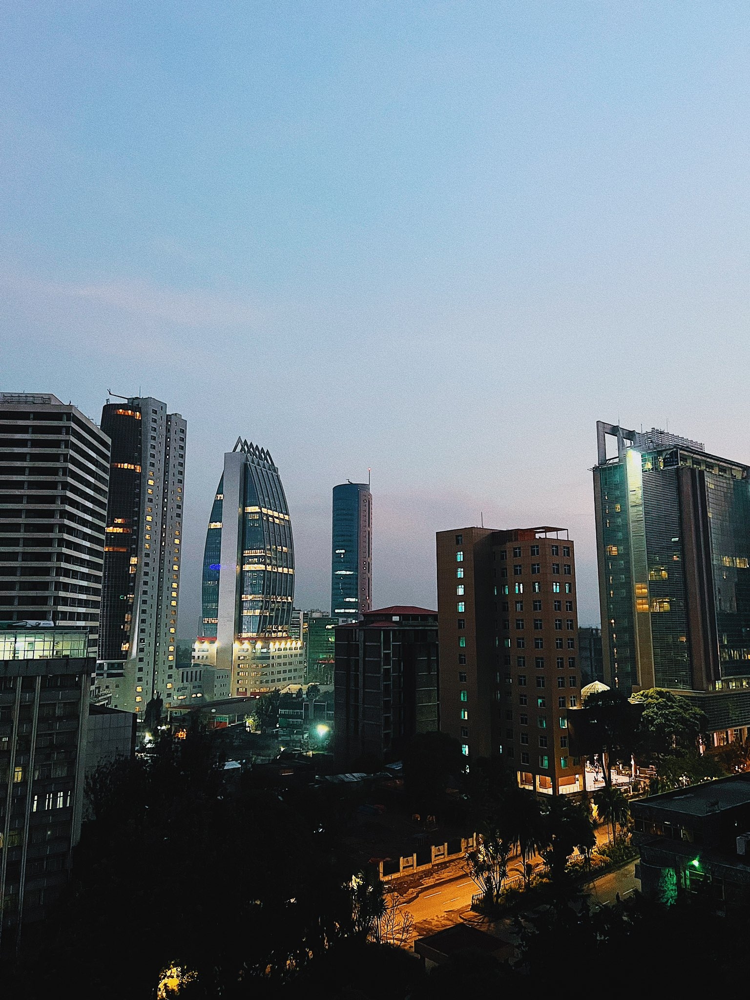
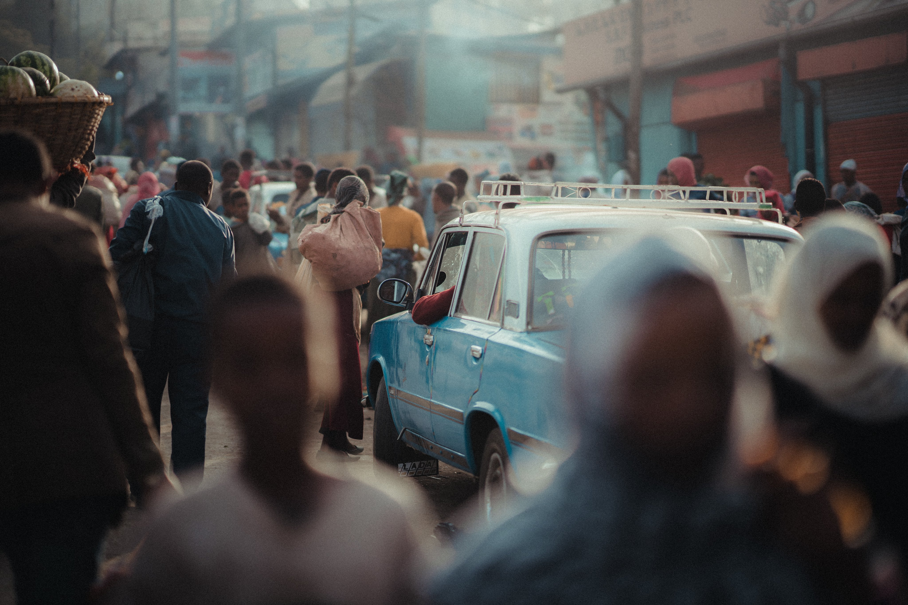
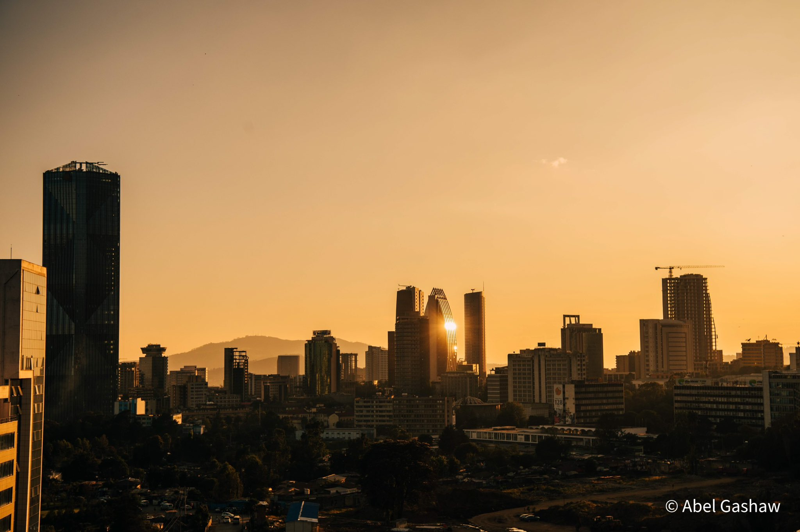
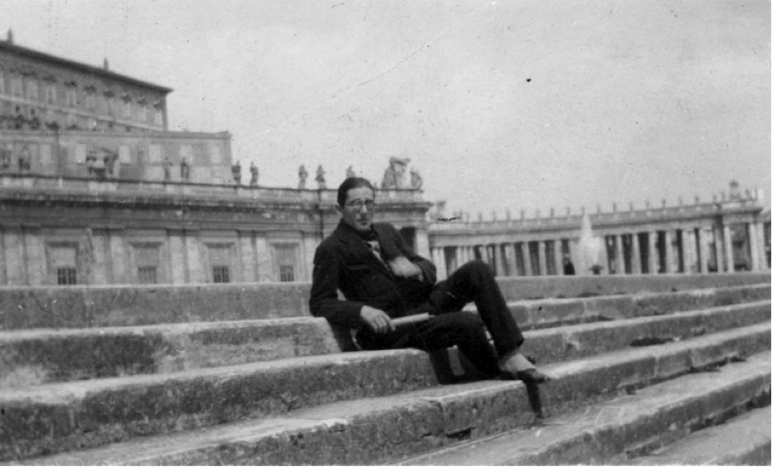
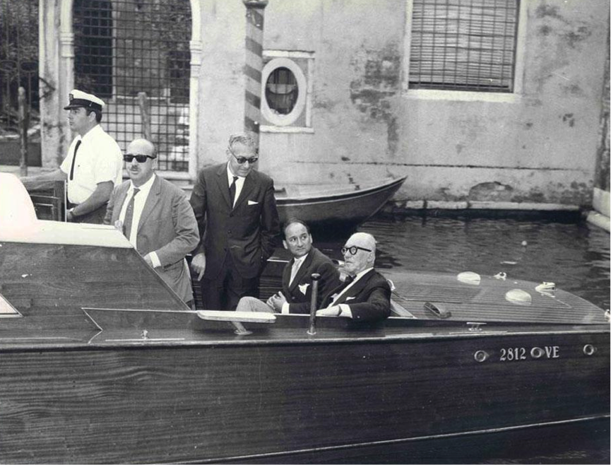
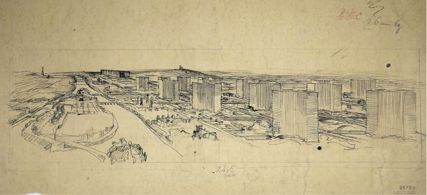
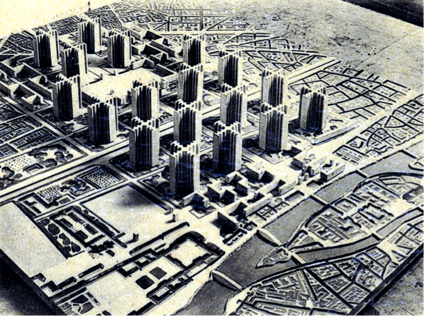
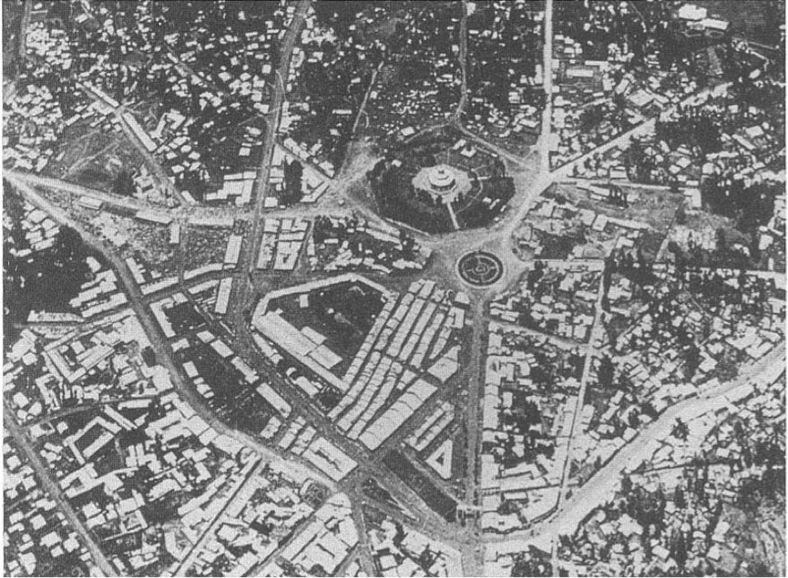
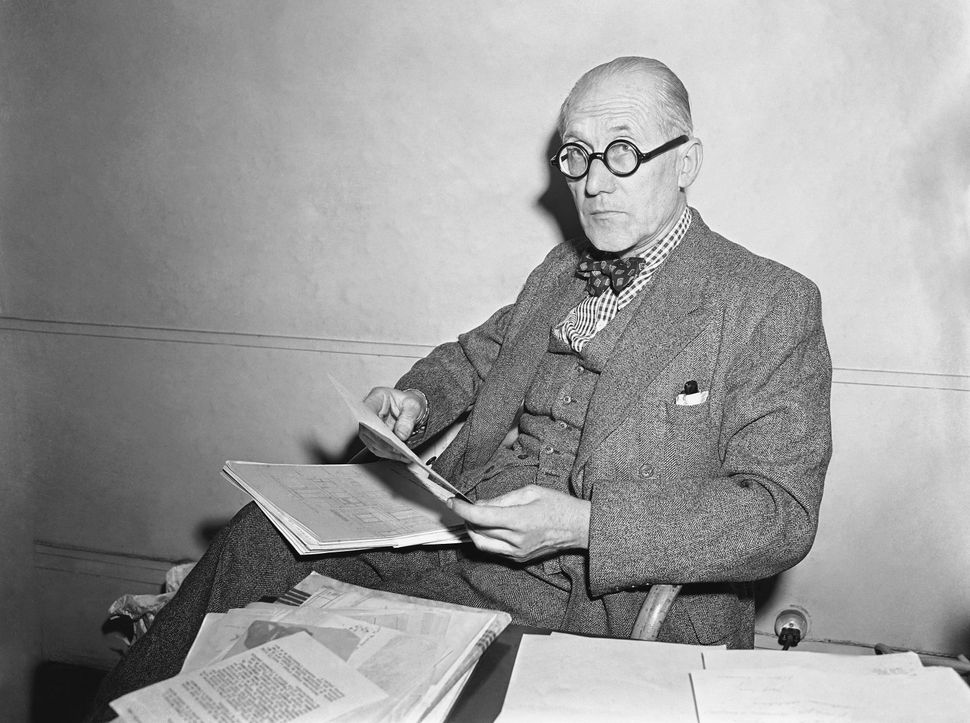
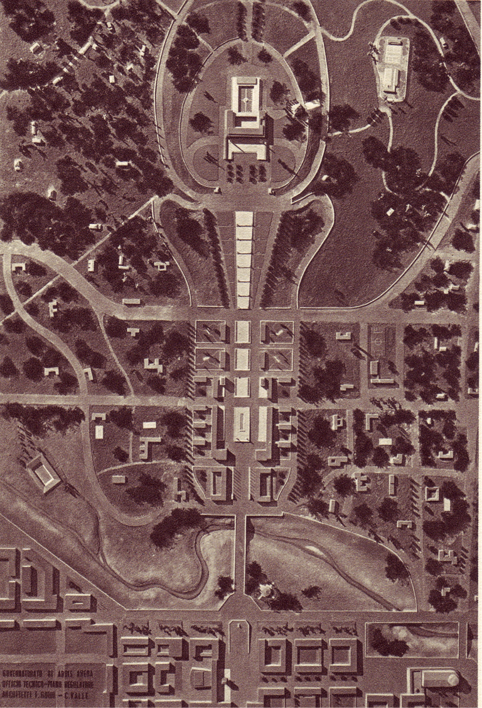

One of Africa's most important cities, Addis Ababa is home to nearly 3.5 million people. Sitting atop the highlands next to the Great Rift Valley, the city sprawls over more than 200 square miles, housing a startling variety of historical and cultural attractions. And, if you want to get out, there are the massive Entoto Mountains to explore right above Addis Ababa.
Within the city center, Addis Ababa boasts monumental architecture and all of the grandeur that can be expected from any national capital. Great churches, mosques, and museums offer respite, solace, education, and inspiration to travelers from around the world. Meanwhile, traditional Ethiopian food and dance are on constant display throughout the city.
Addis Ababa, while cosmopolitan, is still a place where authentic Ethiopian culture is on full display. Whether you're drawn by its history, its art, or its cuisine, there's plenty to be surprised by here.
The idea of Ethiopia as a tabula rasa—a blank slate—was omnipresent in the writings of architects and urban planners occupied with the designs of the colonial capital between 1936 and 1939, who considered the country devoid of any structures of architectural significance. Contrary to the fascination of Libyan whitewashed courtyard house - their simplicity, colours and volumes perfectly in tune with modern taste - the round houses of the Ethiopians were regarded by Italian architects as irrational and unhygienic.
Enter Le Corbusier. Travelling through Italy in his younger years - returning sixteen times throughout his live - Italy had always been a source of inspiration and, during the fascist regime, a place where he could realize his radical plans. In 1932, Le Corbusier proposed a design for a new town in Italy. He sketched a design for Pontinia, one of the five newly planned towns in the Pontine Marshes, an area south of Rome. Four years later, in 1936, the architect was invited to a conference in Rome where he proposed changing the Roman outskirts into a band of high-rises surrounding the old city. Other ideas included a plan for a hospital in Venice and a centre for electronics at the Olivetti factory in the north of Italy. All would remain unrealized.
 Le Corbusier's sketch shows Addis Ababa literally as a tabula rasa: the rigorously superimposed plan cleared the land of all signs of humanity and centuries of urban culture. In his letter, Le Corbusier described his drawing perfectly by writing that he was attracted by “…models so severe, that one might think the colony was a space without time, and therefore, without history, and without any particular geographical meaning.” Further in his letter he added: “…the city is direct dominion; the city becomes the city of government, in which the Palace of the Governor must stand overall…”
It is, however, important to emphasize that Le Corbusier did not have any notion of the standing structures in Addis Ababa as is evident by the inscription written on the sketch: “solution théorique en absence complete de documentation regionale”. Perhaps these quick sketches must not be considered as a product of deep thinking and analytical observation, but rather as a testimony of the architects feeling of Ethiopia as an empty land - a sketch mirroring an aerial view devoid of any circumstantial pollution.
In the end - after debating four years - the plan for the city of the future would always remain a plan for the future; the whole idea of building a new empire remained a fantasy. Ironically, several months after work began, the British army entered Ethiopia and put an end to the construction of the new Italian city. The archives of the Ministry of Italian Africa show besides endless bureaucratic exchanges of letters about designs, deep concerns with the situation on the ground. In fact, due to a lack of appropriate building material very little was built.
Most of it remained paper architecture. In 1940, one rapport reveals that in Addis Ababa, 153 apartments were build by the housing corporation, 64 were build directly, 123 houses were taken from indigenous people, and 66 were rented from indigenous inhabitants. To compare: the regime constructed over 5000 farmhouses in Libya in the year 1940.

Although Italian Addis Ababa gradually changed from a futuristic utopia into a tedious town in the hands of the Italians, this story on Le Corbusier's involvement urges us to rethink the idea of (Italian) colonial planning as an isolated phenomenon. Clearly, the debate on the plans for Addis Ababa was closely intertwined with the general European debate on architecture in the 1930's.
As Le Corbusier's ideas on functional zoning, rigid lines, and three-dimensional urbanism were often too radical and futuristic to be realized on the European mainland, the colony was the ultimate laboratory to realize these concepts. Le Corbusier's sketch challenges us to rethink received interpretations of modernist planning practices: it demonstrates how progressive design could serve to build a destructive colonial empire.
